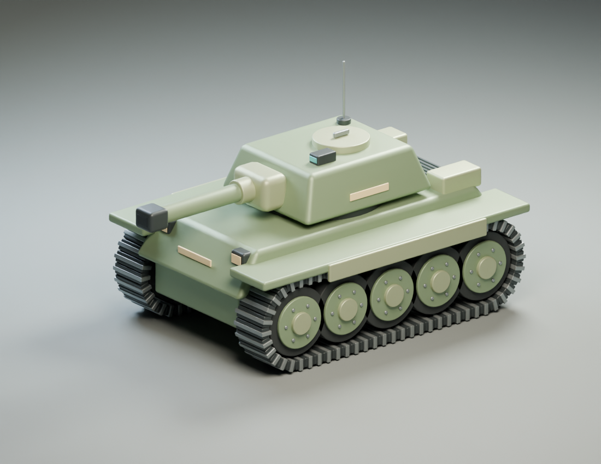
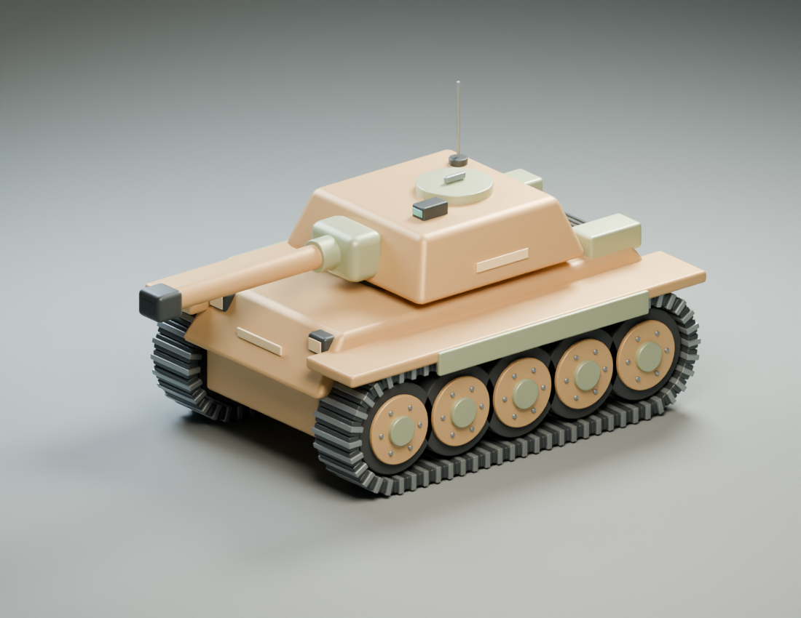

用 Codex 和 Blender 做一辆能拆开再还原的坦克
我看到一篇把探测车设计图做成 Blender 模型的案例，就让 Codex 换一个对象试试，做一辆风格化坦克。
需求里的重点是模型能够继续改。车体、履带、轮组和炮塔要能分别选中，保存以后还能重新打开，改尺寸、换颜色，再导出给其他工具使用。这次实际生成了基础版和修改版两套 .blend、GLB，以及多角度渲染图。

模型做完后，我又让它把全部零件拆开，做成动画，最后补了一段 Blender 工程界面的实际录屏。本文把这几步串起来，工程和 skill 都可以下载。skill 本身仍然只负责可编辑建模，动画与录屏按后续要求单独制作。
先告诉 AI 哪些部分必须能改
原案例使用了带尺寸的三视图。这次坦克的输入是文字概念，具体比例和外观由 Codex 设计，三视图是随后整理的说明图。因此，这次能验证脚本建模、独立部件和后续修改，不能拿它证明对用户原图的精确还原。
如果你有自己的设计图，就把图片和尺寸一起提供。图片未画出的背面、底部或连接方式，需要明确允许补充设计，或者继续提供参考。
可以这样提出需求。
根据附图和标注尺寸，在 Blender 里制作一个风格化的可编辑模型。把需要独立修改的主要部件分别命名，使用米作为单位。先保存基础工程，导出 GLB，并渲染正面、侧面、顶部和主视角。随后重新打开基础工程，完成我指定的尺寸与配色修改，记录前后实测值。
把“主要部件”换成你在意的东西。收纳盒可以是盒体、抽屉与把手；机器人可以是躯干、四肢和传感器。部件清单来自对象的结构，无需照搬坦克的零件数量。
AI 写脚本，Blender 生成工程
这次使用本机 Blender 5.1.2。Codex 编写 Python 脚本，Blender 执行后生成网格、材质、原生工程和 GLB。没有调用额外的三维生成服务。
基础模型共有 380 个独立网格，其中包含重复的履带片和螺栓。数量多是这个模型的结构结果。换成一个只有盖子和盒体的物品，几个对象就可能够用。
脚本建模时，先把主要体积和比例做出来，再加倒角与细节。独立对象之间用层级组织，方便整体移动。用户之后仍然可以打开工程，选中某个零件继续编辑。
如果要自己运行案例脚本，可以在解压后的目录执行下面的命令，把 Blender 路径换成实际安装位置。
BLENDER="/Applications/Blender.app/Contents/MacOS/Blender"
"$BLENDER" --background --python-exit-code 1 --python build.py
"$BLENDER" --background --python-exit-code 1 --python verify.py
脚本会生成并覆盖该目录中的同名案例输出。自己的原工程应放在另一个目录，修改版另存文件。临时目录里能运行 Blender，也不代表系统已经安装好应用；这次最初就在启动器里搜不到程序，后来才把它安装到「应用程序」。
保存之后，再做一次真正的修改
第二版做了三项变化，炮管加长 0.5 米、炮塔加宽 18%，主装甲从苔绿色换成沙黄色。

| 检查项 | 基础版 | 修改版 |
|---|---|---|
| 炮管长度 | 1.46 米 | 1.96 米 |
| 炮管横向尺寸 | 约 0.23 米 | 约 0.23 米 |
| 炮塔实测宽度 | 约 1.6827 米 | 约 1.9856 米 |
| 独立网格数量 | 380 | 380 |
炮塔的设计宽度是 1.72 米，倒角后实测包围盒略有变化，所以表格采用实际测量值。
这里遇到过一个很具体的错误。炮管被旋转后，第一次尺寸修改同时把外形拉粗了。只检查长度增加多少，会漏掉这个问题。修正变换处理后，又检查了两个横向尺寸和炮口位置，确认固定端保留在原处，炮口随加长一起前移。
这种检查同样适用于其他模型。让桌腿变长，要说明哪一端固定；让盒体变宽，要考虑盖子是否跟着调整。把这层关系写进需求，AI 才能知道哪些物体应当一起变化。
修改版通过重新打开基础 .blend 制作，并记录了基础文件的 SHA-256。这个摘要用于确认版本来源。模型外形好不好、附件有没有穿插，仍然要看工程和渲染。
导出后还要读回来
两版 GLB 都被导入到空白 Blender 场景中，检查了网格名称和数量。原生工程也重新打开，核对了关键尺寸和配色。这样才能发现导出丢部件、合并对象或修改没有保存的问题。
检查通过的范围应当说清。这次完成的是风格化外观模型，没有制作完整 UV 贴图集、角色绑定或制造公差验证，也没有验证打印。GLB 在 Blender 中能正常读回，并不等于每个游戏引擎都会显示完全相同的材质。
全部拆开，还能不能还原
可以。这里的拆解动画改变各个对象的位置，原来的网格和装配位置都保留下来。完整模型里有 380 个独立网格，动画给它们分别设置了位置关键帧。
渲染视频长 12 秒，1280 × 720，24 帧每秒。时间线先展示完整模型，然后展开，停留环绕，最后合拢。
| 时间线位置 | 状态 |
|---|---|
| 第 1 帧 | 完整坦克 |
| 第 108 至 192 帧 | 零件全部展开，镜头环绕 |
| 第 144 帧 | 适合暂停查看的拆解状态 |
| 第 288 帧 | 回到完整模型 |
在 Blender 里把当前帧改为 1，就能立即看到完整坦克。按空格会播放动画，各个零件仍然可以单独选择。这里没有制作内部发动机，拆开的是原模型已有的外观零件。
执行时按零件所属结构安排移动方向。车体上下分层，左右轮组向两边拉开，炮管和炮口沿各自方向分离。若给所有物体套同一个位移公式，容易出现遮挡和穿插。动画首先要让人看懂零件之间的关系。
脚本检查了所有目标在展开帧的局部位置发生变化，结尾回到初始位置。本例的父级保持静止，这个检查足以核对所做的位置动画；它没有证明任意复杂装配都不存在碰撞。还检查了所有帧的包围盒取景范围，并抽查实际画面，避免外侧螺栓和天线跑到画外。
在 Blender 窗口里直接看过程
渲染视频交出来后，我又补了一个要求，希望过程直接显示在 Blender 工程里。于是另存了一份展示工程，保留时间线和编辑界面，在视窗里播放同一套拆解动画，并录制目标窗口。
这一步遇到的麻烦很普通。多个 Blender 实例同时运行，窗口工具一直选中旧工程；新实例的首次启动欢迎页又挡住了画面。后来换成独立配置，让 Blender 原生脚本控制播放，再按核实过的窗口编号录制。原来那个带未保存修改的工程保留着，没有被替换。
录屏开始前要实际看一眼窗口。启动命令成功返回，不能说明画面里已经是正确的模型。录完以后也需要抽查中段，确认零件真的在动、时间线确实推进。这里只读视频时长或检查文件存在，会漏掉欢迎页挡住整段画面的错误。
界面录屏约 17 秒。两个 MP4 都做了完整解码检查，画面内容另行抽帧检查。
下载渲染视频 · 下载 Blender 工程录屏 · 下载拆解动画与展示工程
把建模流程装成 skill
这次整理的 skill 叫 blender-editable-3d。它负责从参考图或文字概念开始，完成可编辑建模、自然语言修改和工程交付。它不内置某辆车，也不固定零件数量。
下载 skill，把解压后的 blender-editable-3d 文件夹放到 Codex 的个人 skills 目录，然后在新任务中调用。
使用 $blender-editable-3d，根据这张设计图制作可编辑的 Blender 模型。
保持主要零件独立，先保存基础版，再演示一次尺寸和配色修改。
交付 .blend、GLB 和多角度渲染图。
下载坦克建模案例，可以直接打开里面的基础版和修改版工程，对照对象名称与尺寸看变化。
最初参考的是 Kingy AI 的可编辑三维案例。本文的坦克结果来自这次实际生成的工程、脚本和检查记录。